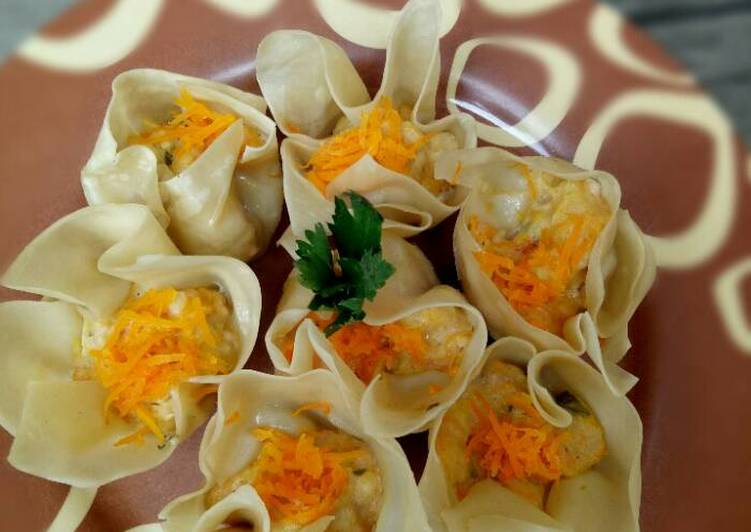

Siomay Ayam
Bahan :
| Daging ayam | 250 gram | |
| Udang | 1 ons | |
| Wortel | 1 buah | |
| Labu siam | 1/2buah | |
| Kulit siomay | secukupnya | |
| Bawang Merah | secukupnya | |
| Bawang putih | secukupnya | |
| Gula | secukupnya | |
| Garam | secukupnya | |
| Minyak wijen | secukupnya | |
| Saos tiram | secukupnya | |
| Tepung maizena | 10 sdm | |
| Tepung terigu | 5 sdm | |
| Merica | secukupnya | |
| Kaldu jamur | secukupnya |
Cara Memasak:
- Haluskan ayam dan udang.
- Haluskan bumbu bawang merah, bawang putih dan merica.
- Campurkan ayam dan udang yang sudah dihaluskan dengan bumbu.
- Parut labu siam dan 1/2 buah wortel, kemudian peras airnya dan campurkan ke bahan.
- Masukkan tepung maizena, terigu, garam, gula, minyak wijen saos tiram, kaldu jamur.
- Aduk hingga rasa tercampur.
- Beri sedikit air agar adonan tidak begitu keras.
- Siapkan kulit siomay, rendam dengan minyak.
- Iris wortel 1/2 bagian lagi kecil-kecil.
- Masukkan adonan ke dalam kulit siomay, cubit-cubit kulit siomay hingga menjadi estetik.
- Tambahkan irisan wortel di atas siomay tadi.
- Kukus hingga matang. Siomay siap dihidangkan.